Goal
If I had to describe Integrity in two words, I would call it a mix of Notion, Miro and Wikipedia. It is a tool for working with information that combines documents, a canvas and a network of connections all in one space. From the very beginning, we aimed for something more ambitious. We wanted to build an environment where people could think freely, without running into interface limits. Instead, the interface should support and even amplify their thinking.
We wanted Integrity to be more than just a tool. We saw it as a space where ideas could turn into action. Our target audience included designers, researchers, product managers, teachers and teams who work with knowledge every day. We wanted the product to adapt to the user's way of thinking, not force them to change their usual approach.
My Role
I joined the project as a freelance product designer for a one-month task. After that month, I became part of the team and took on the role of Senior Product Designer. For most of the time, I was the only designer on the team and was responsible for:
- Defining the product concept;
- Creating user flows and scenarios;
- Designing the interface and information architecture;
- Running user interviews;
- Doing competitor research;
- Presenting features and strategies to the founders;
- Supporting the product from early ideas to final screens.
Context and Problems
Modern professionals spend up to 8 hours a week just searching for information across different tools. Brainstorms happen in Miro, hypotheses are written down in Notion, analysis goes into Confluence, and tasks are tracked in Jira. This fragmented thinking breaks the bigger picture.
Source: International Data Corporation (IDC); McKinsey Global Institute analysis
In interviews, we kept hearing the same pain points: "things get disconnected", "everything turns into chaos", "I can't remember why I linked these things". Even large companies struggle with the lack of structure.
This helped me identify a few key problems:
- 😵💫 Users lose focus and productivity because they constantly switch between tasks.
- 🗃️ The company's knowledge base is scattered and stored across different platforms.
- 🚫 There is no smooth way to move content from a page to the canvas.
That's how my main hypothesis came to life: it's impossible to work with information effectively if the canvas and the document are kept separate. I suggested connecting them not just visually, but logically. The canvas would be a space for thinking, and the document would give that thinking structure. This idea became the starting point for Integrity.
Test Task
My first touchpoint with the project was a test task. But instead of designing regular screens, I was asked to create a conceptual vision for Integrity. I came up with three user scenarios and ran them through a five-step meaning-making framework — from research to sharing.
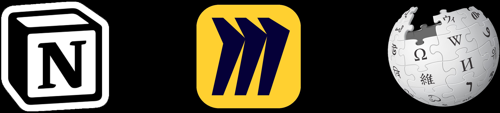
Based on these scenarios, I built the first conceptual map of Integrity. It wasn't a typical interface. It was more like an inner logic, a framework that future visual solutions could rely on.
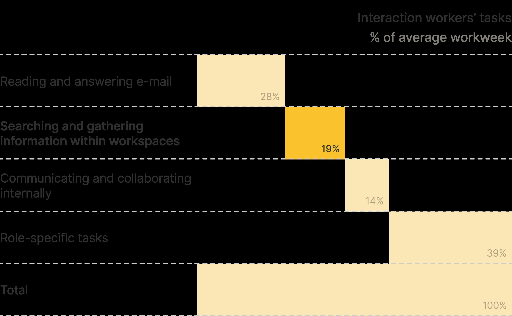
The test task became the foundation of the product and showed the founders that my approach worked. After that, they invited me to join the team as a freelance designer for one month.
First Stage
The next step was building prototypes based on user interviews that had already been done before I joined. After that, we planned to run more user interviews, test our hypotheses and collect data for the first product strategy. This phase ended with a presentation for the founders. It was my first mini sprint and a quick sketch of what Integrity could become.
Together with the product manager, we defined our target audience as the cognitive class. These are people who actively work with information. That included designers, researchers, teachers, product managers and entrepreneurs. At that point, we saw the product as a B2C tool.
At first, I imagined the architecture of Integrity as a system of projects organized into folders inside collections, similar to how Figma works. These folders hold files, and the user can use a toggle to display their content on the canvas.


At the same time, I analyzed competitors like Tana, Anytype, Heptabase and others. I looked at their strengths and weaknesses in terms of UX, architecture and user behavior. Then I created a feature matrix.
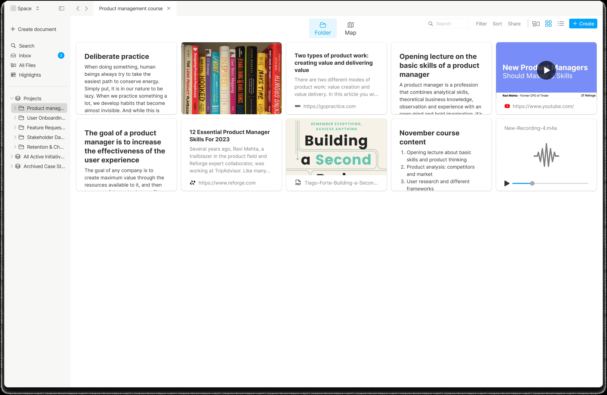
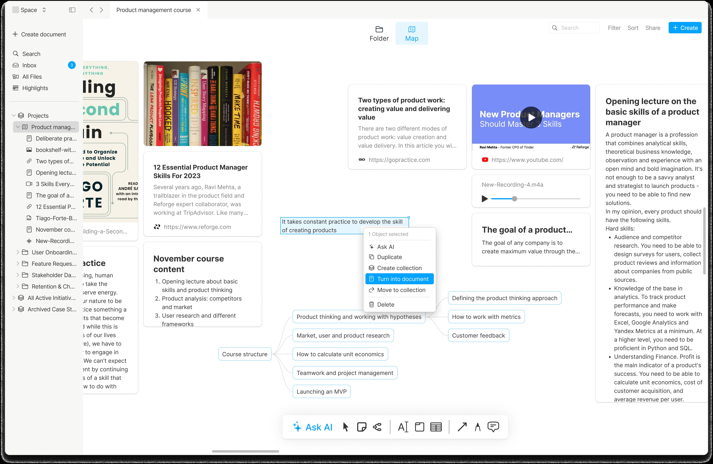
After building the prototypes, the product manager and I ran nine interviews with people from our target audience. We tested how clear the concept was, whether the features were useful and what problems users were facing.
Key insights:
- People are tired of using too many tools and want one universal solution;
- The interface needs to be simple, without sacrificing clarity for flexibility;
- Visualization, analytics and the ability to present ideas really matter;
- The product should work well for both individuals and teams;
- The interface should support thinking, not get in the way.
We confirmed our hypotheses and started shaping the strategy. Users showed interest in testing the product with real tasks.
The final output of this stage was a demo video, which helped the team secure the first $500,000 in investment. After that, I was offered a permanent role as Senior Product Designer.
Second Stage
Together with the product manager, we shaped the product vision and presented it to the CEO. We worked closely with the developer, adjusting our ideas to match what was technically possible.
The interviews showed that teams also needed Integrity. They were a more paying audience. We adjusted the user flows to support collaboration without losing the value for solo users. This marked our shift toward a B2C2B model.
The work moved step by step. I shared ideas, identified corner cases, ran tests, showed results and refined the details. I kept the interface minimal and familiar, so it would feel easy to understand. The goal was for users to instantly get how everything works, like they had seen it before.
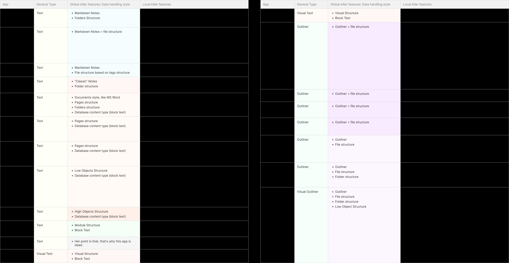
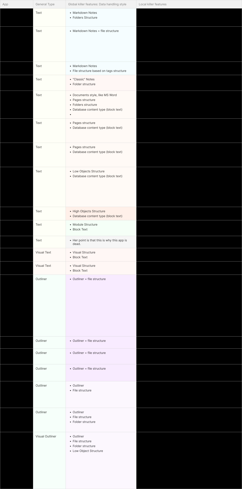
I worked not only on the interface but also on the product logic, how everything connects and functions. When the focus shifted to teams, we had to rethink the structure. Folders turned into documents, like in Notion, but with true nesting, which Notion doesn't support. The canvas and the document became separate elements that could be placed inside each other.
In early summer 2024, I ran 20 more interviews, including with users who prepare talks using mind maps. This confirmed our hypothesis. Switching between modes is not just about the UI. It is a shift in the user's cognitive model.
This led to a key decision. Instead of having different types of pages, I created a single document with switchable thinking modes. The canvas became a side area, and the mind map turned into a document mode.
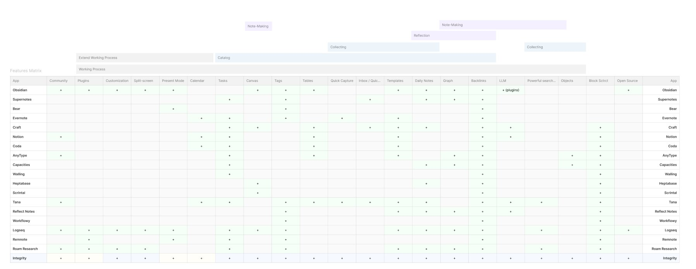
The project was experimental, and that gave us room to explore. I wasn't trying to simply combine Miro and Notion. I wanted to create something fundamentally new. Here are the key features I designed:
Switcher
A quick way to move between the document and the canvas, which we called the pagevas. It is a page with a working area where you can place sticky notes, structure your thoughts and bring them back into the text. The canvas is not just a blank space. It is a place for connected content like sticky notes, tables, maps, videos and documents.
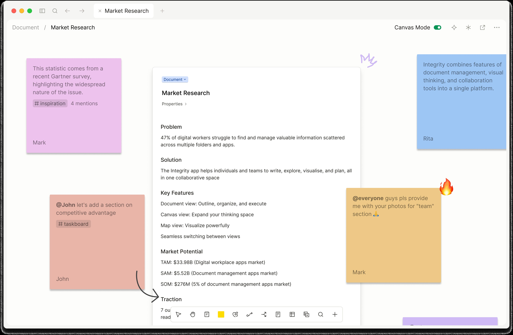
Collector
A tool for quick notes. It lets you capture a thought or save what's currently on your screen. Later, I set it aside to focus on more important features for the MVP.
Advanced documents
Let you view the same content as a page, kanban board, table or mind map. The user chooses the format that fits their way of thinking.
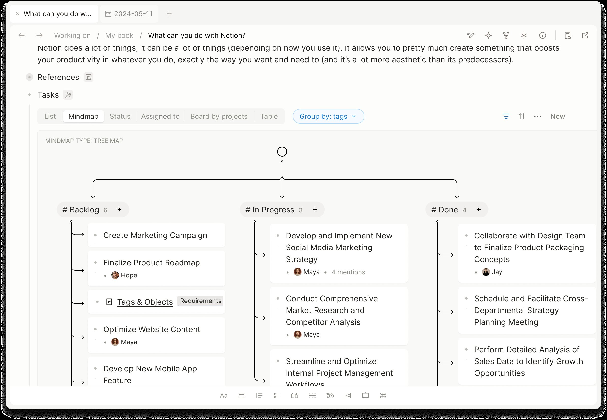
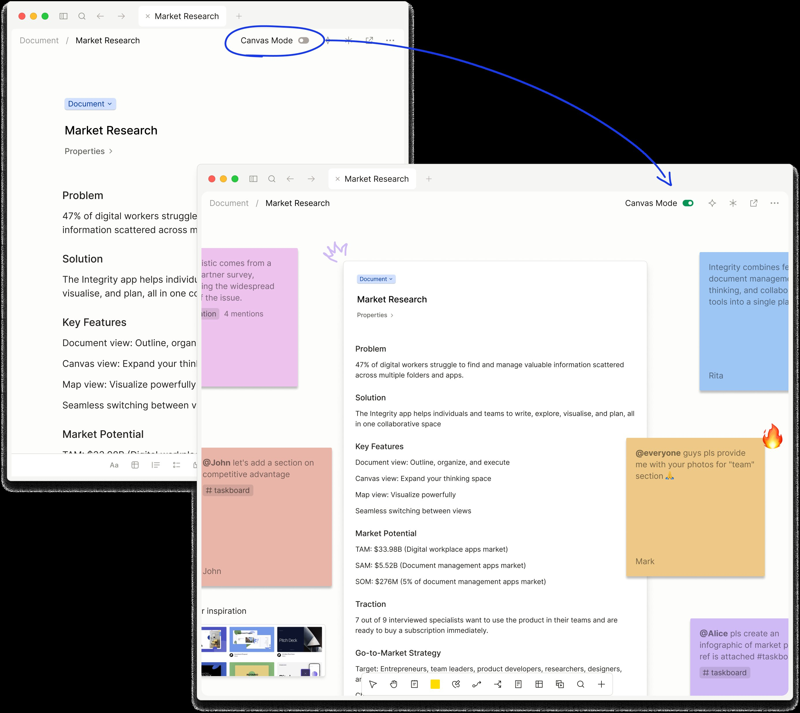
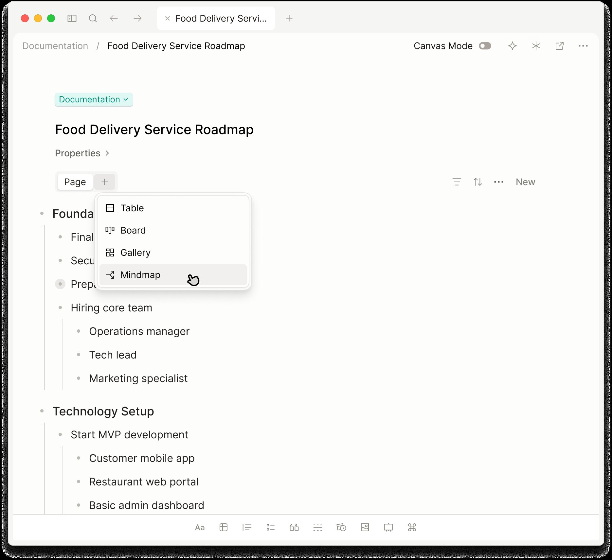
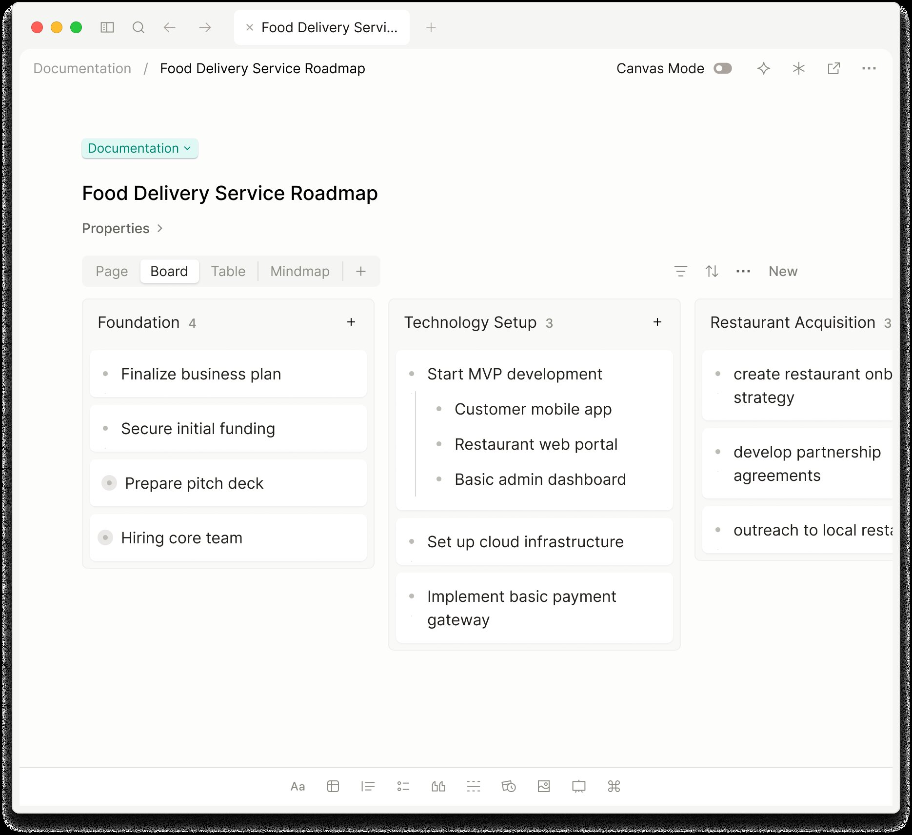
I added several navigation options. There is a file structure like in Notion, tags like in Obsidian, collections like in Capacities, along with folders and bookmarks. The goal was to make users feel that the product adapts to their way of thinking.
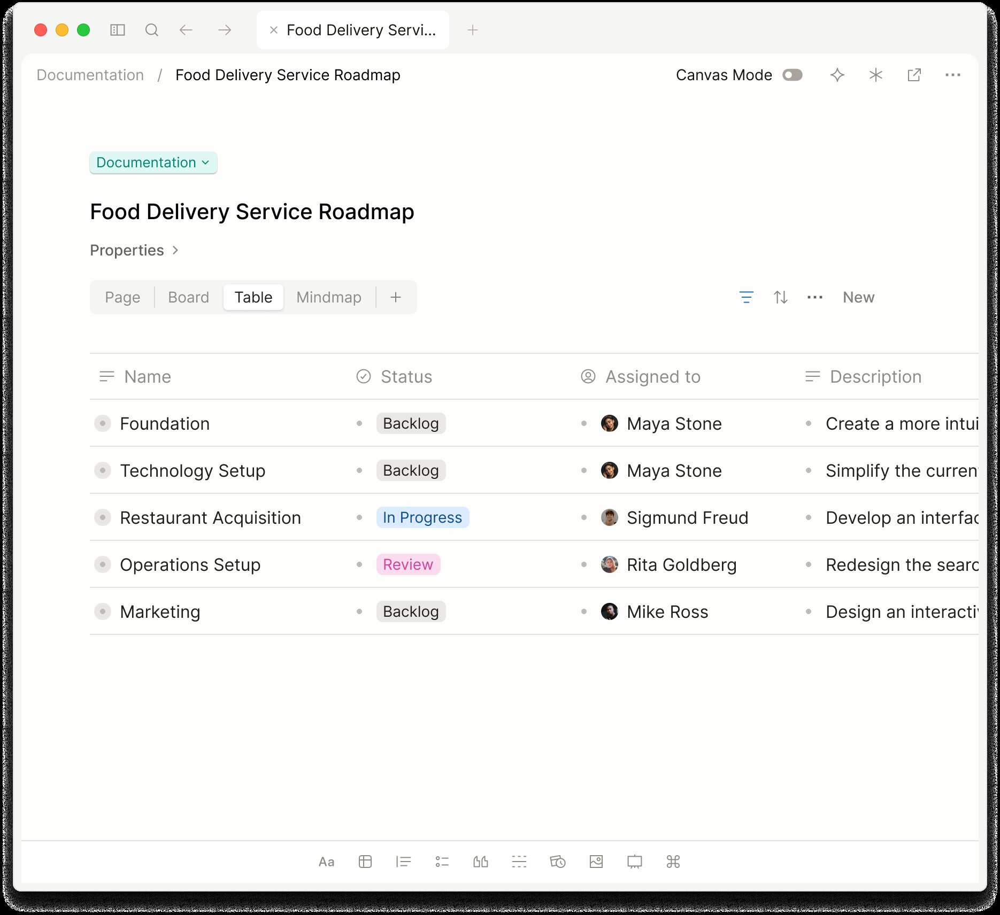
In the end, a huge amount of work was done:
- I designed and connected over a hundred features, from basic to experimental;
- Built a complete system with its own internal logic;
- Created a glossary to support scaling and documentation;
- Prepared user flows and layouts for the beta version;
- Set up a team workflow using Loom and an iterative approach.
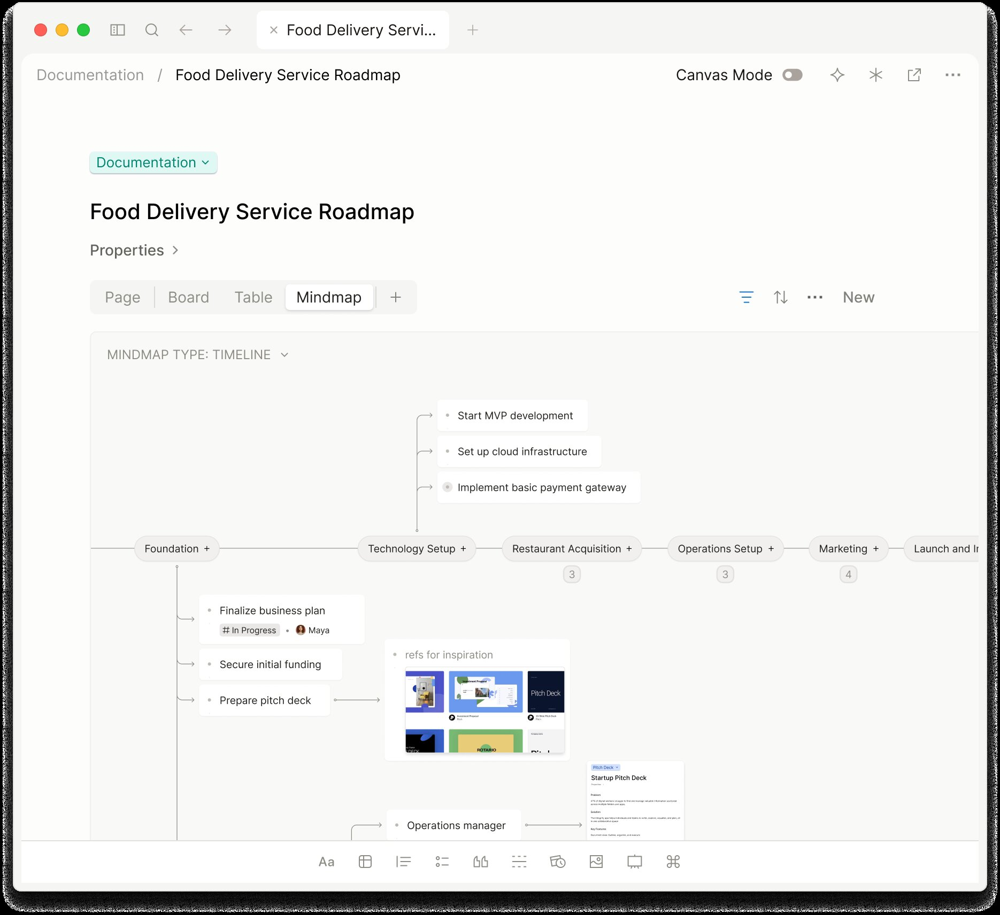
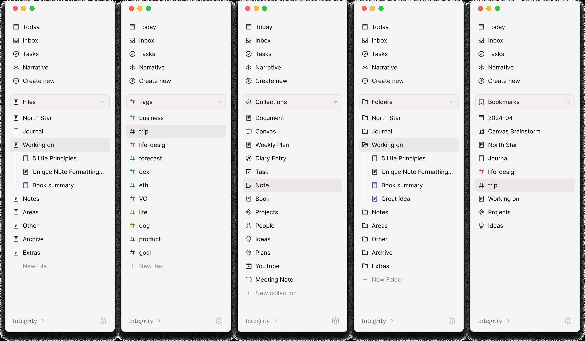
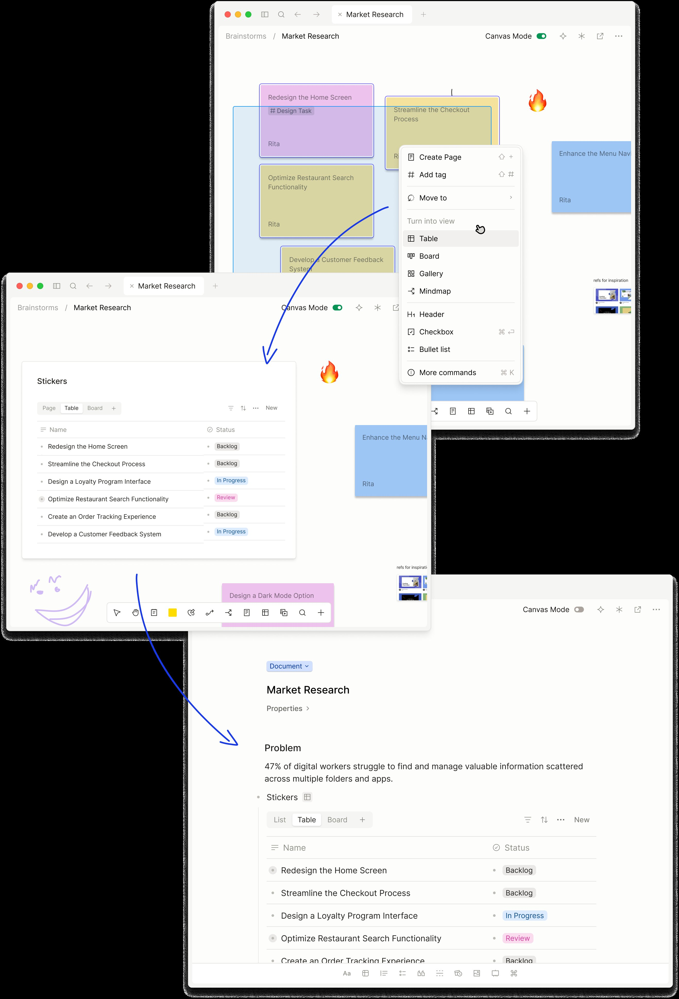
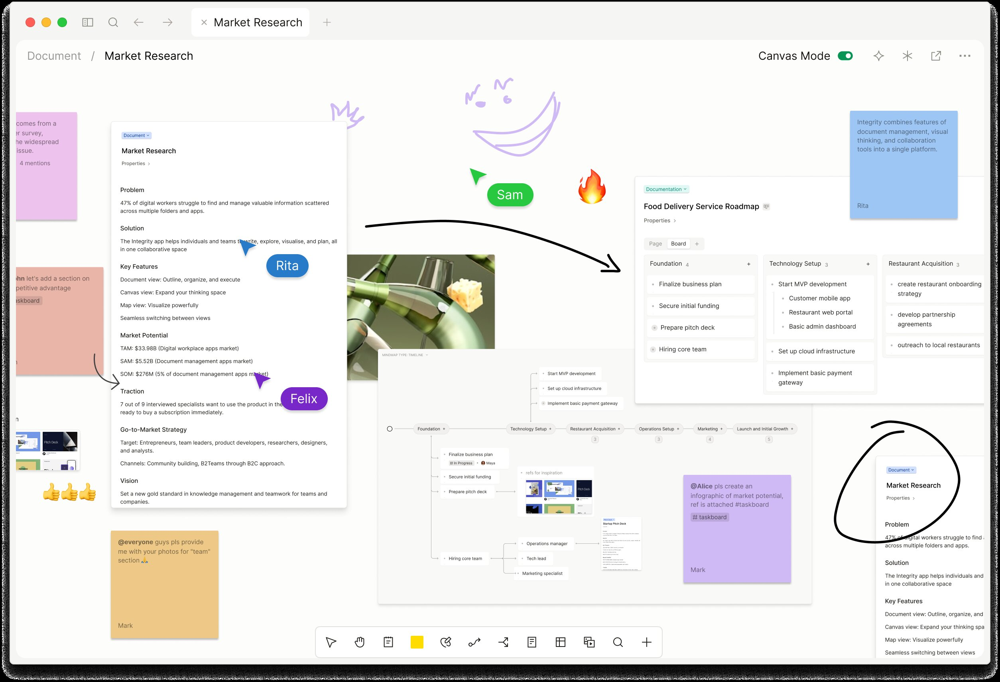
My Learnings
- Went from an idea to a nearly finished product with no direct analogs;
- Improved my skills in system design and knowledge architecture;
- Worked in a distributed international team, fully synced in time and tasks;
- Learned how to defend UX decisions, explain my thinking and find compromises;
- Turned abstract ideas into practical interfaces with clear cognitive logic.
Closing Thoughts
Integrity is not just a design case. It reflects how I think and how I believe digital products should support thinking. It is a system where thinking is supported, not fragmented. I'm proud to have contributed to rethinking how we work with knowledge and to have helped create a product that makes it easier to think, structure and act with clarity.